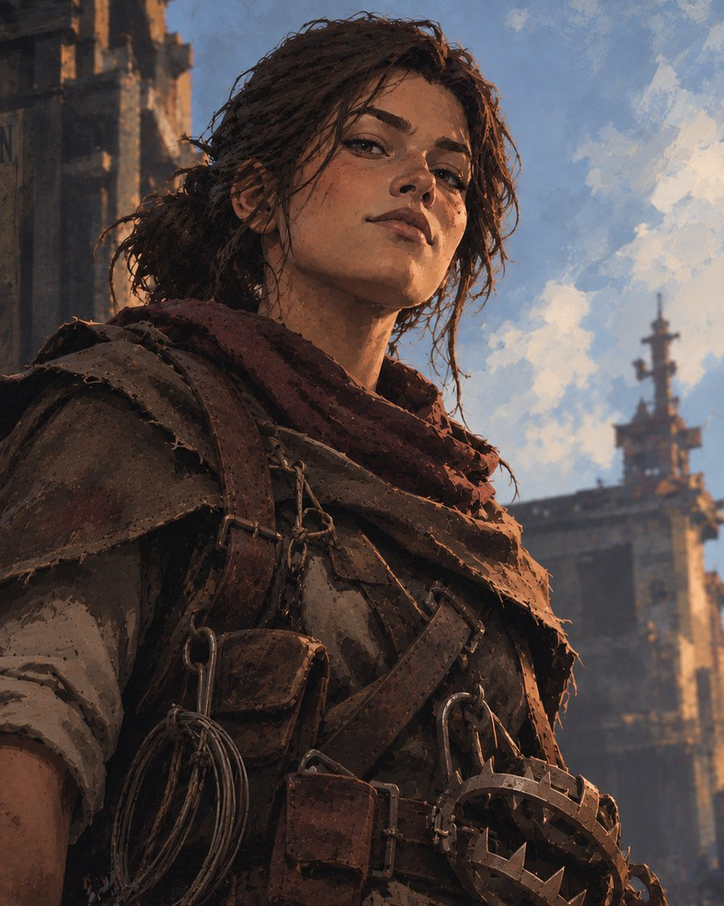
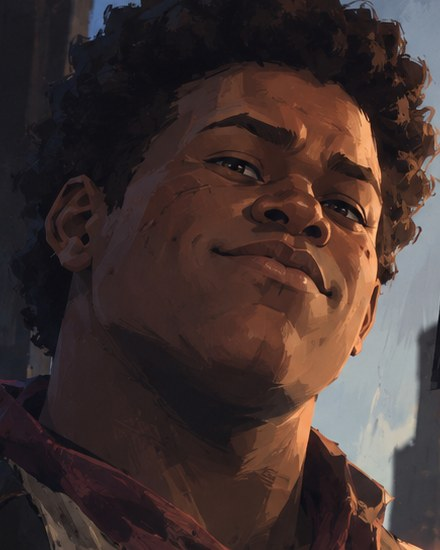

Dossier de groupe
Les Freux de Van Horn
La présentation complète du projet, pensée pour le staff.
Pillards territoriaux
5 membres
Petit groupe, bande à terme
Van Horn
Routes Van Horn · Saint Denis · Rhodes
New Hanover, 1890
Ancien bureau du shérif
Saloon · Comptoir de recel
Pillage des routes, vol, attaques de la poste, recel, événements au saloon
But du groupe
En jeu
Les Freux veulent faire de Van Horn un paradis de bandits : une ville où la loi ne trouve jamais personne, où les criminels en fuite peuvent se cacher contre paiement, et où tout ce qui traverse le territoire doit rapporter quelque chose. Au-delà du butin, ils rejettent ce que représente le gouvernement et rêvent d'un retour à un temps où chacun était libre. Ils attisent la colère des mineurs, des ouvriers et des fermiers, et profitent des manifestations pour piller.
Hors jeu
Nous voulons faire vivre un aspect qui manque aujourd'hui au serveur : un groupe réellement territorial, à l'image des bandes de l'univers de Red Dead attachées à une région, comme les Rejetons de Murphy ou les Pillards de Lemoyne. En limitant notre présence à Van Horn et aux routes qui y mènent, nous voulons que les joueurs sachent où se trouve le danger et choisissent d'y aller ou non, et bâtir une communauté autour de la ville avec des scènes cohérentes et immersives.
Activités
Les Freux vivent de ce qu'ils prennent aux autres, et ils le prennent de la façon la moins risquée possible. Leur activité principale est le pillage des routes qui relient Van Horn à Saint Denis et à Rhodes. Ils ne cherchent pas le coup d'éclat. Ce qu'ils veulent, c'est qu'on sache que ces routes-là sont dangereuses. Un chariot renversé en travers du chemin, un faux blessé sur le bas-côté, des cavaliers qui surgissent des bois en nombre, et le voyageur repart sans sa bourse, sans sa montre, parfois sans ses bottes. À force, certaines routes doivent devenir célèbres : on les évite, on y passe au galop, on paie une escorte, ou on s'y risque la main sur son revolver.
À côté des routes, les Freux pratiquent le vol sous toutes ses formes : chevaux laissés sans surveillance, marchandises mal gardées, poches trop pleines, fermes isolées. Ils s'en prennent aussi à la poste, qu'il s'agisse des diligences postales, des sacs de courrier ou des colis et mandats qui voyagent d'une ville à l'autre. Tout ce qu'ils ramènent passe ensuite par Van Horn, où le butin est trié, partagé, puis écoulé au comptoir de recel que tient le groupe.
Ce qu'ils ne font pas compte tout autant. Les Freux ne braquent pas de banques et ne s'attaquent pas aux lieux bien gardés : trop de risques, trop d'étoiles. Ils frappent là où la loi n'est pas, et disparaissent avant qu'elle arrive.
Le recel
Au bout du ponton, le vieux comptoir de Van Horn a gardé son enseigne délavée, mais on n'y vend plus grand-chose d'honnête. C'est là que les Freux tiennent leur recel. Tout ce qui a été volé, pillé ou « trouvé » dans la région peut y être racheté puis revendu : tableaux, outils, armes, objets de décoration, montres et bijoux. Le prix dépend de la qualité de la marchandise, de sa provenance et de l'humeur du receleur, et tout objet trop reconnaissable se négocie à la baisse.
Hors jeu, l'idée est simple : plutôt que de revendre leur butin à un PNJ, les joueurs du serveur passent par nous. Chaque vente devient alors une vraie scène. On marchande, on se méfie, on vérifie qu'un objet n'est pas trop recherché, et on se demande si le receleur ne va pas vendre l'information au plus offrant. Un bijou volé peut réapparaître au cou de quelqu'un d'autre, un tableau peut mener un enquêteur jusqu'au comptoir, et un vendeur trop pressé peut repartir avec bien moins que prévu. Le recel crée ainsi du lien entre les voleurs, les bandes et les forces de l'ordre de tout le serveur.
{kind=link}
{kind=link}
Le saloon de Van Horn
Les Freux souhaitent reprendre le saloon de Van Horn et en faire le cœur de la ville. Le jour, on y boit comme partout ailleurs. La nuit, il devient le point de rendez-vous de tout ce que la région compte de bandits, de parieurs et de gens qui préfèrent ne pas être vus.
Plusieurs événements y seront organisés régulièrement. Dans l'arrière-cour se tiennent des combats illégaux, où l'on parie sur les combattants et où n'importe qui peut tenter sa chance. Au départ du saloon partent des courses où tout est permis : coups de coude, pièges sur le parcours, raccourcis douteux, et une mise qui revient au premier arrivé. Dans l'arrière-salle, les groupes du serveur peuvent se réunir en terrain neutre pour négocier une trêve, régler un différend ou simplement être tranquilles, sans que personne ne sorte son arme. Enfin, le saloon sert de cachette : pour quelques dollars, un fugitif y trouve une chambre à l'étage, une porte de derrière et un patron qui n'a vu personne.
Ces événements sont pensés pour attirer à Van Horn des joueurs de tous horizons, et pas seulement des criminels. Ils seront organisés en accord avec le staff et annoncés à l'avance pour réunir le plus de monde possible.
Scènes apportées au serveur
Nous voulons créer des scènes où le danger se ressent avant même de croiser un Freux. Les rumeurs qui circulent dans les saloons, les avertissements des habitants et les traces d'une embuscade au bord du chemin doivent installer un vrai climat de peur sur certaines routes. Nos pillages sont pensés comme des scènes à jouer, pas comme des exécutions : on arrête, on menace, on négocie, et la victime garde toujours une porte de sortie, qu'il s'agisse de payer, de ruser ou de tenter sa chance.
Parce que les Freux sont lâches, nos scènes laissent de la place aux autres. Un voyageur bien armé peut les faire reculer, un convoi escorté peut passer, et un shérif qui se montre suffit à les disperser. Cela doit donner lieu à des poursuites, des enquêtes, des avis de recherche et des tentatives pour remonter la piste jusqu'à Van Horn. Dans la ville elle-même, nous voulons faire vivre le décor : détrousser les étrangers trop voyants, cacher des fugitifs, écouler du butin, et monter, en accord avec le staff, des manifestations qui débordent sur les villes voisines. Enfin, les trahisons et les rivalités au sein du groupe offrent des intrigues à tous ceux qui voudront s'en mêler.
Effectif et évolution
Les Freux comptent aujourd'hui cinq membres. Nous souhaitons rester un petit groupe, parce que c'est ce qui correspond le mieux à une poignée de charognards qui frappent vite et s'évanouissent dans la nature. Si le groupe grandit naturellement et que le jeu le justifie, nous pourrons évoluer plus tard vers le statut de bande. En revanche, nous ne visons pas du tout celui d'organisation : les Freux n'ont ni la discipline, ni la loyauté, ni l'ambition qu'il faudrait pour ça.
Implantation
Les Freux s'implantent à Van Horn, qui reste leur nid, leur refuge et l'endroit où ils écoulent ce qu'ils volent. Leur terrain de chasse s'étend sur les routes qui relient Van Horn à Saint Denis et à Rhodes. En dehors de ce territoire, on ne les croise que rarement, et jamais longtemps. C'est ce qui doit rendre le groupe lisible pour les autres joueurs : chacun sait où les Freux rôdent, et choisit de s'y aventurer ou non.
Notre QG
Le repaire des Freux se trouve dans l'ancien bureau du shérif de Van Horn. Le bâtiment a brûlé il y a des années : le toit est éventré, les murs sont noircis, le lierre grimpe sur la façade et on devine encore les lettres « Sheriff Office » sous la suie. Personne en ville n'a jamais voulu le reconstruire, et aucun homme de loi n'a jamais voulu le reprendre.
Pour les Freux, c'est à la fois un abri et une provocation. Ils ont allumé leur feu au milieu des planches effondrées, rangé leurs caisses et leurs tonneaux sous ce qui reste de l'étage, et entassé leur butin derrière les barreaux des anciennes cellules. Le bâtiment donne sur la rivière et sur les pontons, ce qui permet de guetter les arrivées et de filer par l'eau si une étoile se montre au bout de la rue. Les shérifs qui passent devant ne voient qu'une ruine. Ils ne se doutent pas que c'est dans leur ancien bureau que les Freux se partagent le butin.
{kind=link}
{kind=link}
Nos montures
Plutôt que de demander l'accès à des armes particulières, nous souhaitons pouvoir acheter des chevaux bien précis : ces bêtes maigres, sales et couvertes de cicatrices qu'on ne croise d'ordinaire qu'entre les mains des Rejetons de Murphy. Robes pelées et tachées, crinières emmêlées, jambes marquées de plaies mal refermées, une simple corde en guise de licol : ce sont des chevaux volés, mal nourris et montés jusqu'à l'épuisement. Exactement ce qu'une bande de charognards peut s'offrir.
Ce choix colle bien mieux à l'identité des Freux qu'un arsenal. Les Freux ne cherchent pas à gagner les fusillades, ils cherchent à faire peur puis à disparaître. Une troupe de cavaliers montés sur ces carcasses ambulantes se reconnaît de loin sur les routes de Van Horn, de Saint Denis et de Rhodes, et participe directement au climat de peur que nous voulons installer. Nous ne recherchons aucun avantage de jeu à travers ces chevaux : leur intérêt est avant tout visuel et narratif, pour que chacun reconnaisse les Freux au premier coup d'œil.
Ces chevaux ne pourraient pas non plus devenir une source d'argent pour le groupe. Ce sont des bêtes malades, blessées et à bout de forces : personne n'aurait le moindre intérêt à les acheter, et il nous serait donc impossible de les revendre. Ils resteraient simplement ce qu'ils sont, les montures des Freux, sans aucun effet sur l'économie du serveur.
Surtout, ils ouvrent la porte à de vraies scènes avec les écuries. Un cheval malade doit être soigné, surveillé et suivi dans le temps : des plaies à nettoyer, une fièvre à faire tomber, des visites régulières, des soins qui fonctionnent ou qui échouent. Plutôt que de se contenter de vendre des chevaux et de refaire toujours la même chose, les écuries auraient de véritables patients à suivre, et les Freux une bonne raison de venir frapper à leur porte. Ces allers-retours créent du lien entre la bande et le reste du serveur, et donnent aux écuries un rôle qui dépasse la simple vente.
{kind=link}
{kind=link}
Principaux personnages

Kaid Marlow
« Scar » chez les Freux · « le Roi des Rats » à Van Horn · organisateur des pillages et médecin de fortune
Joueur · Discord : fdwares
Dix-neuf ans, fils d'un chimiste ruiné, élevé dans les rues de Saint Denis. C'est souvent lui qui prépare les pillages et donne le signal de la retraite. Il recoud les blessés, fabrique somnifères et poisons, et donne à la bande une direction : la liberté. Les Freux n'ont officiellement pas de chef, mais c'est vers lui que les regards se tournent.
Lire sa fiche complète
Mabel Crowley
« Trapp » · pièges et combines
Joueur · Discord : Astreia ღ
Dix-huit ans, fille des quais de New Hanover. Spécialiste des pièges improvisés et des petites magouilles, elle repère ce que chaque situation peut rapporter à la bande. Bavarde, provocatrice et loyale à sa manière, elle tombe parfois dans ses propres pièges et en rit la première.
Lire sa fiche complète
Enid Veyne
« Spiza » · repérage, infiltration et diversion
Joueur · Discord : LAUL3SSly
Dix-neuf ans, née dans une ferme près de Rhodes. Elle observe une cible pendant des heures, parfois des jours, avant une attaque, puis sert d'appât ou de diversion pour l'amener là où la bande l'attend. Pendant les vols, son obsession pour le goût du sang met mal à l'aise jusqu'aux Freux eux-mêmes.
Lire sa fiche complète
Basile Bourlet
« Mulo » · informateur
Joueur · Discord : TANK3HEAT
Dix-huit ans, né à Annesburg d'un père mineur mort de la silicose. Sociable et faussement naïf, il se mêle aux conversations, pose les questions que personne d'autre n'oserait poser et repart avec les informations dont la bande a besoin. On le sous-estime, et c'est exactement ce qu'il veut.
Lire sa fiche complèteFinn Oakes
« Latch » · serrures, crochetage et sorties
Joueur · Discord : fdw.jeezy
Dix-neuf ans, fils d'un réparateur de Saint Denis et ancien apprenti serrurier. Il ouvre les serrures, force les caisses et les coffrets, et prépare toujours la sortie avant que la bande n'entre quelque part. Calme et sarcastique, il cache derrière son air distant une loyauté qu'il refuse d'admettre, et une peur panique d'être enfermé.
Lire sa fiche complète